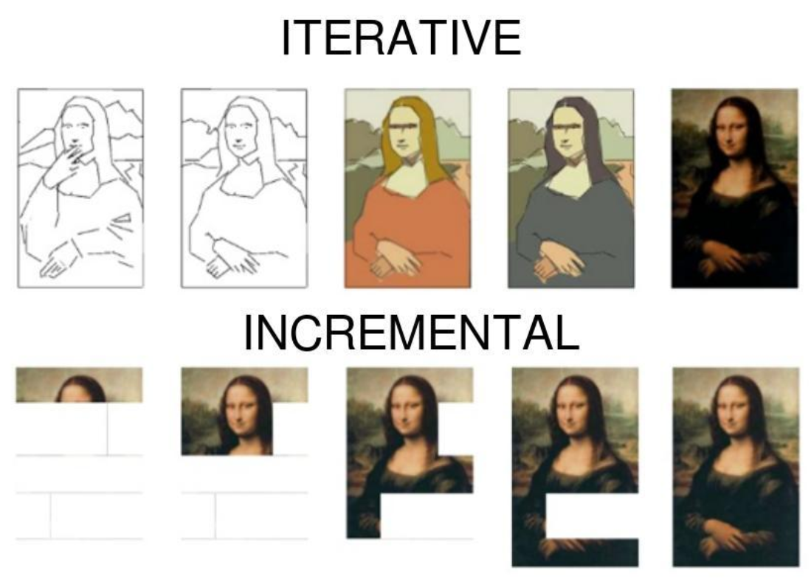
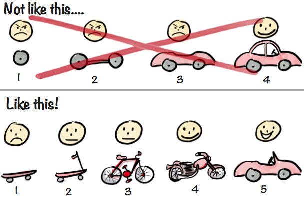

All.code design.how to guide
Code Design#
Design Philosophy#
Measure seven times, cut once (Russian proverb)#
-
Before doing any work, sit down and plan
- Describe somewhere in writing your high-level plan. Put it in a Google doc
to make it easier to collaborate and review.
- What should the code do?
- What are the functionalities you want to implement?
- What are the functionalities you don't want to implement? (what are you explicitly considering to be out-of-scope?)
- What is more important, what is less important? E.g., in terms of P0, P1, P2
- What are the requirements/invariants?
- What are the semantics of the entities involved?
- What are the analyses, the comparisons, and the plots?
- What are the ideas (expressed without any code!)?
- ETA: Spend quality time thinking about it (e.g., 30 mins, 1 hr)
- Review the plan
- Look at the plan again with fresh eyes (e.g., go for a 5-min walk)
- Does the plan make sense?
- What can you remove?
- Can you make things simpler?
- What is not elegant?
- What entity is a special case of another?
- What is similar to what?
- ETA: Spend 30 mins thinking
- Ask for someone to review the plan
- Don't be ashamed of asking for advice
- Implement a design
- Transform the plan into high-level code, e.g.,
- What are the objects / functions involved?
- What are the responsibilities of each class / function?
- What are the code invariants?
- What are the data structures?
- Write the interfaces
- Only the interfaces! Refrain from implementing the logic
- Comment the interfaces clearly
- Think of how the objects / functions interact (who does what, what is the data passed around)
- Sprinkle TODOs with ideas about potential problems, simpler approaches
- ETA: Spend 1/2 day, 1 day
- Transform the plan into high-level code, e.g.,
- Do a PR of the design
- Once we converge on the design:
- Implement the functions
- Unit test
- PR
- Describe somewhere in writing your high-level plan. Put it in a Google doc
to make it easier to collaborate and review.
-
Remember:
- We want to do quick interactions: every day there is communication, update and discussion
- Do not disappear for one week and come back with something that makes sense only to you, or that you didn't get buy-in from others on
Hacker laws#
- A list of interesting "laws" (some are more rule of thumbs / heuristics) related to computing:
Keep it simple#
- Follow the KISS principle.
- Pursue simple, elegant solutions. Some things are inherently complex, but even complex systems can (and should) be broken down into simple pieces.
- Designs that are simple are easier to
- Understand
- Modify
- Debug
Tips from a pro#
- Adapted from these slides from a Stanford talk given by Jeff Dean (the Chuck Norris of SWE)
Designing software systems is tricky#
- Need to balance:
- Simplicity [note that this comes first!]
- Scalability
- Performance
- Reliability
- Generality
- Features [note that this comes last!]
Get Advice Early!#
- Get advice
- Before you write any code
- Before you write any lengthy design documents [notice the implicit assumption that there is a design documented!]
- Before writing a doc or code
- Jot down some rough ideas (a few paragraphs)
- Chat about the design with colleagues
- Consider discussing multiple potential designs
Interfaces#
- Think carefully about interfaces in your system!
- Imagine other hypothetical clients trying to use your interface
- Document precisely, but avoid constraining the implementation
- Get feedback on your interfaces before implementing!
- The best way to learn is to look at well-designed interfaces
Architecture#
Use design patterns#
- Design patterns are idioms or recipes for solving problems that commonly appear in software engineering across projects and even languages. The classical introduction to design patterns is the so-called "Gang of Four" book.
- A free Python-focused reference is available here.
- Expanding your knowledge of design patterns is a worthwhile investment,
because design patterns
- Capture elegant solutions that have been developed by many experienced programmers over a long period of time
- Provide a framework and reference point for software architecture
- Are widely used and well-known and therefore quickly recognized by skilled programmers
- In other words, by using design patterns, you
- Don't have to re-invent the wheel
- Simplify the high-level picture of your code
- Make it easier for other people to understand your code
Functions#
Avoid modifying the function input#
-
If, for example, a function
faccepts a dataframedfas its (sole) argument, then, ideally,f(df)will not modifydf. If modifications are desired, then instead one can do:python def f(df): df = df.copy() ... return dfin the function so that
f(df)returns the desired new dataframe without modifying the dataframe that was passed in to the function. -
In some cases the memory costs associated with the copy are prohibitive, and so modifying in-place is appropriate. If such is the case, state it explicitly in the docstring.
-
Functions that do not modify the input are especially convenient to have in notebook settings. In particular, using them makes it easy to write blocks of code in a notebook that will return the same results when re-executed out of order.
Prefer pure functions by default#
- Pure functions have two key
properties:
- If the function arguments do not change, then the return value returned does not change (in contrast to, e.g., functions that rely upon global state)
- Function evaluation does not have side effects
- Some nice properties enjoyed by pure functions are:
- They are easy to understand and easy to test
- Using pure functions makes refactoring easier
- They allow chaining in an elegant way
- They are often a natural choice for data manipulation and analysis
- They are convenient in notebooks
- Though it is good to develop an appreciation for functional programming, and we like to adopt that style when appropriate, we recognize that it is not pragmatic to dogmatically insist upon a functional style (especially in our domain and when using Python).
Invariants#
From ./oms/architecture.md
Invariants and conventions
-
In this doc we use the new names for concepts and use "aka" to refer to the old name, if needed
-
We refer to:
- The as-of-date for a query as
as_of_timestamp - The actual time from
get_wall_clock_time()aswall_clock_timestamp - Objects need to use
get_wall_clock_time()to get the "actual" time - We don't want to pass
wall_clock_timestampbecause this is dangerous -
It is difficult to enforce that there is no future peeking when one object tells another what time it is, since there is no way for the second object to double check that the wall clock time is accurate
-
We pass
wall_clock_timestamponly when one "action" happens atomically but it is split in multiple functions that need to all share this information. This approach should be the exception to the rule of calling
get_wall_clock_time()
-
It's ok to ask for a view of the world as of
as_of_timestamp, but then the queried object needs to check that there is no future peeking by usingget_wall_clock_time() -
Objects might need to get
event_loop -
TODO(gp): Clean it up so that we pass event loop all the times and event loop has a reference to the global
get_wall_clock_time() -
The Optimizer only thinks in terms of dollar
Our approach to doing things#
Roles and responsibilities#
-
How to communicate
- Slack for urgent stuff or interactive things (ideally on a small group chat)
- All the action happens in the GH issues
- Update the Issues multiple times a day
-
RPs (responsible party), aka "Tech leads"
- Review / clean up the board once a week (before Mon meeting)
- Distribute / coordinate work in the teams
- Do first PR review
- Merge PRs (trivial or agreed upon)
- First line of defense for IT / dev issues
- The best answer to any problem is a link to gdoc with the solution
-
Everybody to keep their Issues up to date in GH
- In the
In progressandSprint Backlog - Each issue has typically:
- A single assignee
- A GH Project
- Maybe a label
- Each Git branch should go with the corresponding Issue
- E.g.,
AmpTask2163_Implement_tiled_backtesting i git_issue_number,i git_create_branch -i XYZ
- E.g.,
- When you create a (draft) branch always create an associated PR
- E.g.,
i gh_create_pr
- E.g.,
- We like draft PRs to discuss architecture before unit testing
- In the
Good practices#
-
Good Issue reports
- What are you trying to achieve
- What are you doing (cmd line, setup)
- What is the error
- Why do you think things should work differently?
-
"One PR a day keeps the doctor away"
- "... keeps investors at bay"
- At least 1 PR a day
- Draft architectural PR when in doubt 
- Break work in smaller chunks (multiple PRs per bug)
-
Go for a skateboard
- = something that works end-to-end 
-
1 PR per day
- Even if it's not complete (do a draft)
- Update the bugs (at least) every day
- Ask questions if you have any doubt
- Always sync